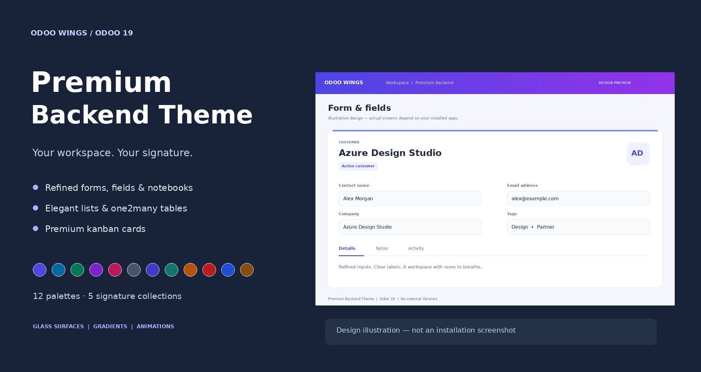
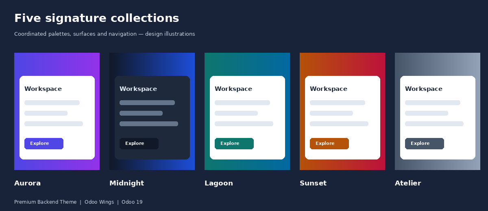
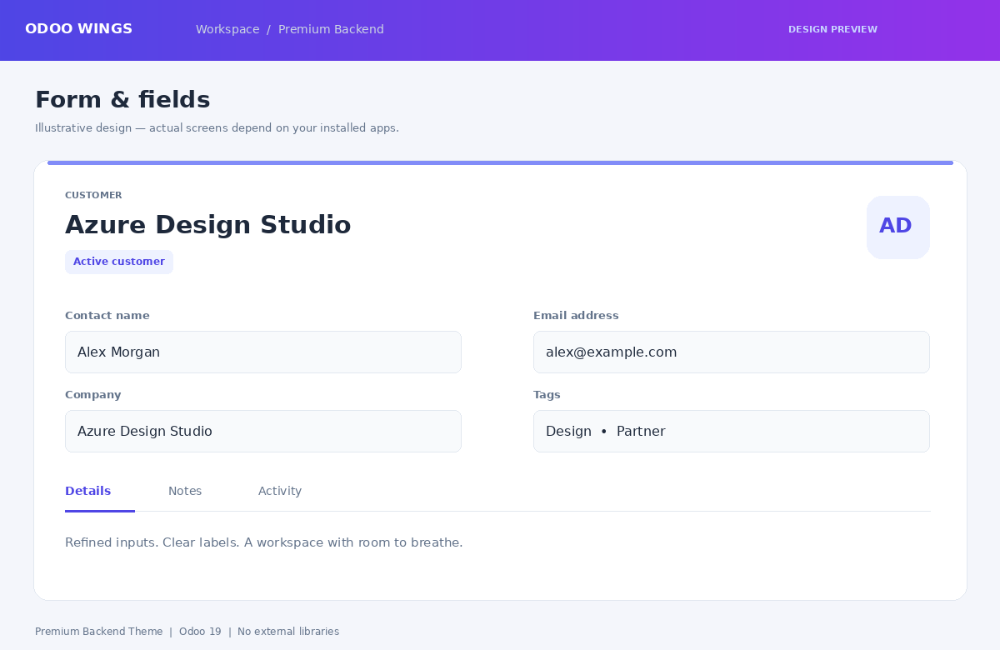
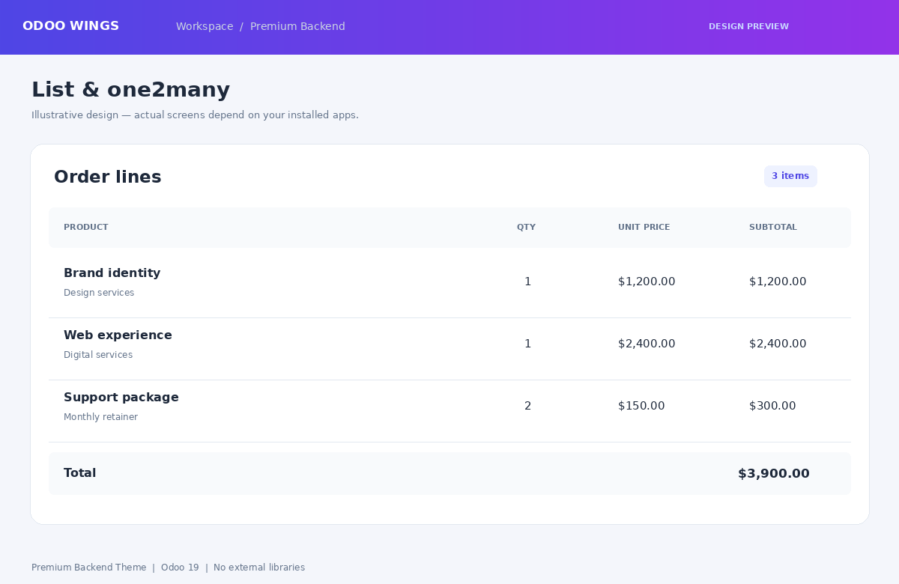
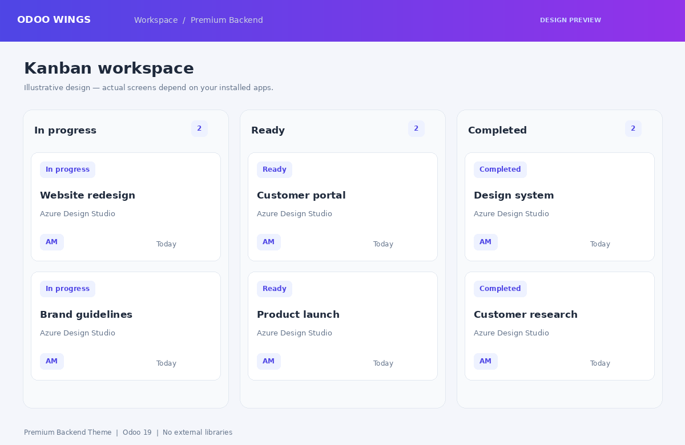
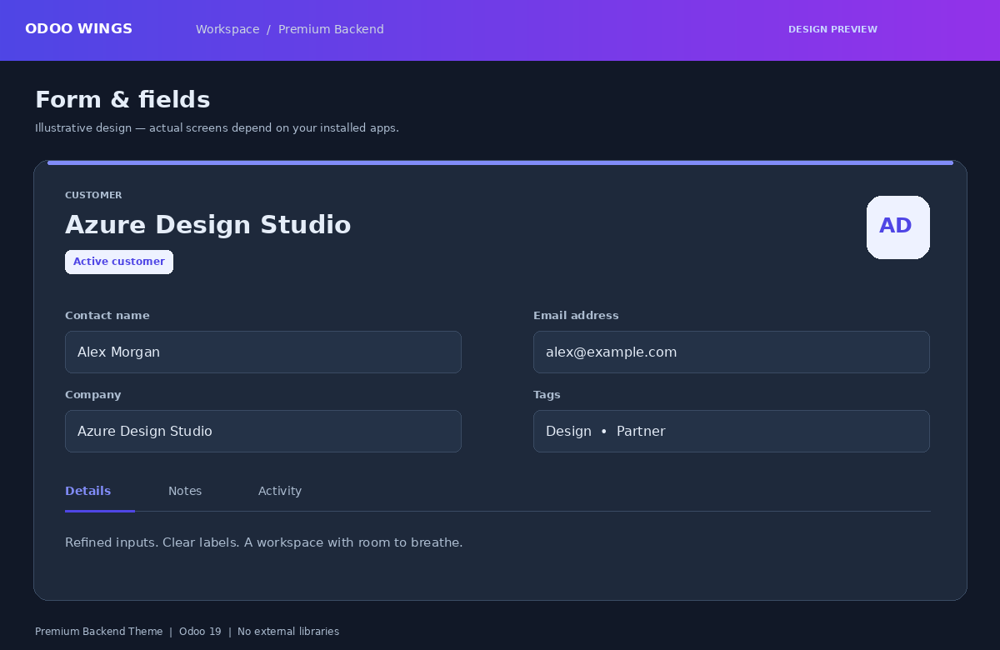
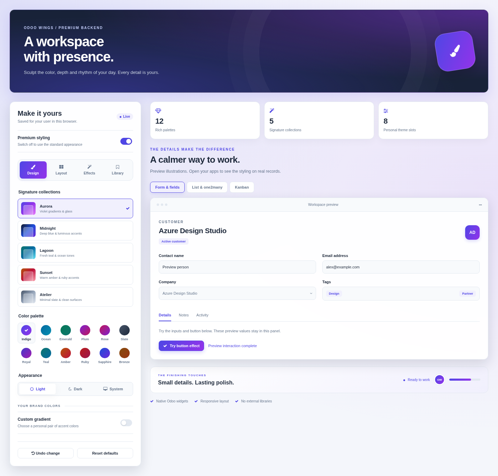
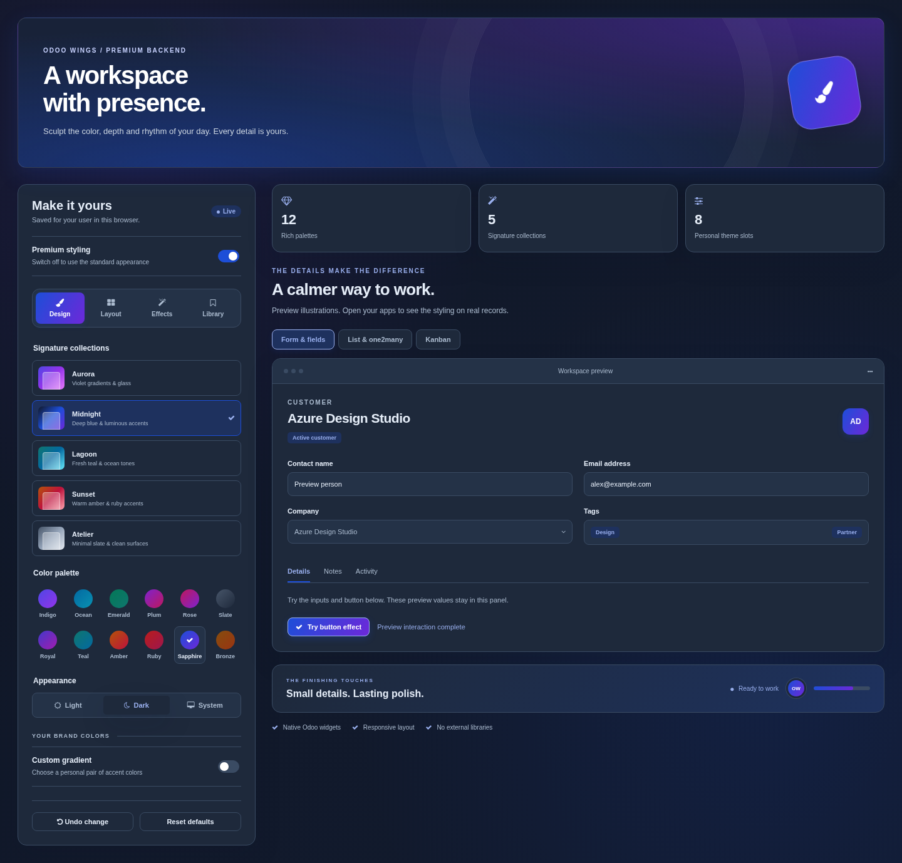

ODOO WINGS / ODOO 19 BACKEND
Your workspace. Your signature.
Bring thoughtful spacing, polished controls and refined surfaces to everyday work.
Forms & FieldsLists & One2manyKanban CardsLive Appearance Studio

MAKE IT YOURS
Choose from twelve paired-color palettes, including Indigo, Ocean, Emerald, Plum, Rose, Slate, Royal, Teal, Amber, Ruby, Sapphire and Bronze. Apply Aurora, Midnight, Lagoon, Sunset or Atelier for a coordinated finish. Switch between light, dark and system appearance. Adjust density and corners without reloading the page. Your preferences are saved for your user and database in this browser.
| Appearance | Light, dark or device system preference |
| Density | Comfortable spacing or compact layouts |
| Corners | Rounded or square surfaces and controls |
| Motion | View fades, dialog entrances, hover lift and button feedback; subtle or expressive timing, with reduced-motion support |
| Your choice | Disable premium styling or restore defaults at any time |
SIGNATURE FINISHES
Choose glass, elevated or clean surfaces. Pair gradient, midnight or surface-colored navigation with an Aurora, mesh or plain workspace backdrop. Enable soft focus halos, striped table rows and larger text for your daily work.
Optional view fades, dialog entrances, button press feedback and card hover lifts bring movement to your workspace. Choose subtle or expressive timing. Reduced-motion preferences are respected automatically.

01 / FORM VIEWS
Refined form sheets, labels, groups, notebook tabs and smart buttons. Soft input surfaces and visible focus states make editing feel more consistent. Required inputs receive an accent edge; invalid inputs keep their validation cue. Native field behavior is preserved.

02 / LISTS & ONE2MANY
Clean headers, subtle separators, selected-row styling and clear totals. One2many and many2many list tables gain defined borders and consistent spacing. Comfortable and compact options let you choose how much information to see. List views are the modern equivalent of older tree views.

03 / KANBAN
Give native kanban cards refined borders, soft shadows and accent hover states. Group headers and quick-create panels share the same visual language. Your existing card content and workflow remain native to Odoo.

04 / DARK APPEARANCE
Dark surfaces for standard backend views, menus and dialogs. Use system appearance to follow your device preference automatically.

APPEARANCE STUDIO / PERSONAL EDITION
Actual Appearance Studio component rendered in an isolated browser preview.


Build your own gradient from two custom colors. Save up to eight named looks in your browser, export the active settings to another device and undo up to twenty appearance changes in the current session. Bright accent colors are automatically deepened to keep white button text readable.
| Design | Signature presets, twelve palettes, personal gradients and light/dark appearance. |
| Layout | Typography, wide forms, soft/outlined/underline inputs, tinted headers and card accents. |
| Effects | Adjustable depth and glow, button light sweep, accent ribbons and optional motion. |
| Library | Eight personal themes, validated settings import/export and appearance undo. |
Saved themes are local to your user, database and browser. Transfer settings manually with export/import. Font availability depends on your operating system. Motion controls and system reduced-motion preferences apply to optional effects.
| Version | Odoo 19 standard backend components |
| Dependency | Web only; no Enterprise dependency |
| Frontend | Native Owl components, JavaScript and SCSS; no React or CDN |
| Preference storage | Per browser, database and user; no device synchronization |
| License | Odoo Proprietary License v1.0 (OPL-1) |
Designed for standard form, list and kanban markup. Custom widgets and Enterprise-specific screens may require additional styling. Other backend themes can conflict. Website, portal, POS, PDF reports and specialized graph, pivot, calendar or Gantt renderers are outside this addon's scope.
Visit our Odoo Wings app page and explore practical tools created to simplify daily work, improve team productivity and deliver a smoother Odoo experience for businesses of every size.
Find more useful tools for your team on the official Odoo Apps Store.
Odoo Wings provides installation, configuration and customization support.
Contact Odoo Wings